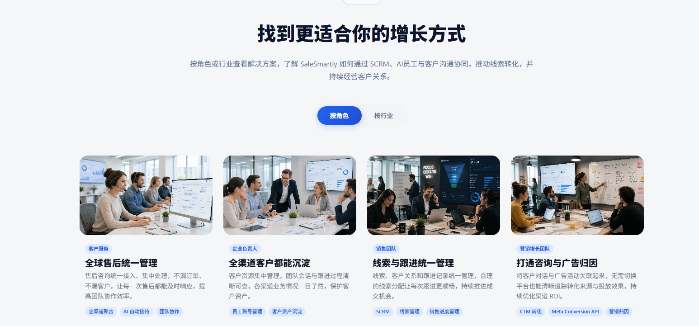

工具体验 · 联盟营销
AI Agent 在不同平台接助每一条客户咨询
消息散落在不同平台时，最累的往往不是回复本身，而是担心漏掉客户。SaleSmartly 给我的直观感受，是把跨渠道回复和基础自动化放到一个更容易管理的流程里。
先说我的结论
对同时经营网站、社交媒体和即时通讯渠道的中小卖家，SaleSmartly 值得试用。它把客户消息集中到一个工作台，便于查看、回复与分派；基础自动化能帮你处理重复问题，但重要承诺仍需要人工确认。
为什么我会关注这个工具？
小团队最常遇到的情况是：客户在不同平台发来询价、售后或合作消息，负责人不断切换页面，最后却很难知道哪条已经处理、哪条还在等回复。我最近深度用了一阵 SaleSmartly，觉得它特别适合想先把客服流程理顺、又不想一开始搭很复杂系统的中小卖家。
这里说的“容易上手”，指基础的消息集中和常用规则更容易理解；实际连接渠道、设置权限和自动回复时，仍要按各平台的账号条件逐项检查。

我最看重的三个功能方向
01跨渠道集中回复
如果你的咨询来自 WhatsApp、Facebook、Instagram 或网站聊天，统一收件箱的价值很直接：查看消息来源、保留会话上下文，并按团队需要分派跟进。实际可接入范围仍要看你的账号类型和方案。

02基础自动化减少重复工作
欢迎语、常见问题、分派规则和人工接手，是我认为中小团队可以先试的部分。先选一个最常被问的问题，写好准确答案，再设定何时转给真人，比一开始把所有咨询都交给自动回复更稳妥。
03对话与客户资料接得上
消息集中以后，团队还需要知道“这位客户问过什么、下一步由谁跟进”。客户标签和跟进状态能帮助整理线索，但资料的收集和保存仍应符合你的隐私与内部管理要求。

哪些卖家适合先试？
- 多平台接单的小团队：每天要在几个账号之间切换，担心漏回客户。
- 跨境或多语言业务：希望在同一工作区处理不同渠道和语言的查询。
- 重复问题较多的商家：想先把营业时间、产品资料、物流或售后问题做成标准回复，再逐步加入自动化。
如果你只有一个渠道、咨询量很少，先用现有方式也可能足够。试用时建议先记录一周的消息量、漏回情况和团队处理时间，再判断是否需要升级。
我建议这样开始，不用一次设太多规则
- 先选一个最常收到咨询的渠道，确认账号能否接入。
- 整理 5 个真正高频的问题，写出已核对的回复内容。
- 设置“无法回答、价格例外、退款或投诉”时转人工。
- 用真实咨询测试一轮，检查消息是否漏收、回复是否准确。
- 再决定要不要接入更多渠道或使用更高阶功能。
给粉丝的注册入口
我和官方沟通后，为读者争取到这个邀请入口。想体验跨渠道回复和基础自动化，可以通过下面的链接查看当前可用的免费试用。试用期限、功能范围，以及是否需要付款资料，均以注册时页面显示为准。
好东西，值得冲！先用自己的业务流程试一轮，再决定要不要长期使用。
通过我的邀请链接查看免费试用 ↗这是推广链接；点击或购买可能为我带来回报。请在注册页面核对价格、方案与试用条件，再决定是否使用。